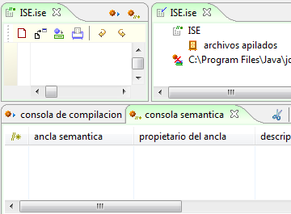
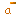

Componente Galeria ISE Miró

Figura 1. Elementos de la Galería ISE en la interfaz de Coloso
La galería Integrated Semantic Framework (ISE) Miró toma su nombre el artista Joan Miró (1893-1983), en donde los diferentes elementos de ISE son representados por iconos que recuerdan las obras, formas y colores utilizados por el artista.
El componente ofrece iconos para el entorno semántico de Coloso que permiten identificar las diferentes vistas de la consola semántica, incluyendo las de autoría, CRC, métrica, tareas, asersiones, etc. La figura 1 muestra algunos elementos de la Galería ISE utilizados por Coloso.
El objetivo del componentes es generar un entorno agradable de uso para la herramienta, ofreciendo iconos distintivos y vistozos, que apoyen la creatividad en los procesos de diseño y desarrollo de software.
Estos son algunos de los iconos que se pueden encontrar en la Galería ISE Miró.
